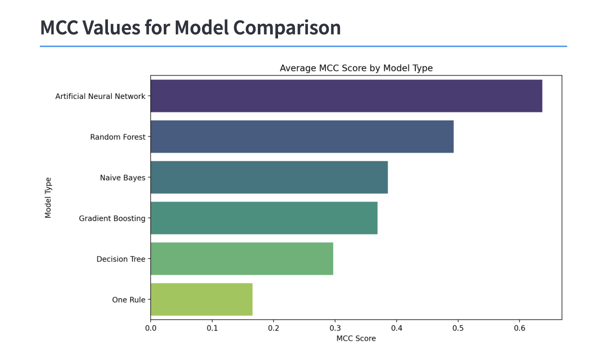

Males with Diabetes at Risk for Heart Failure (ANN Model)
0
I found a dataset on UCI Machine Learning that includes data about heart failure.
This dataset is discussed in the paper: "Machine learning can predict survival of patients with heart failure from serum creatinine and ejection fraction alone,"
so I decided to replicate the analysis done in this paper in my project using Python. I predict the survival of patients with heart failure using a variety of classifiers.
I found that the artificial neural network (ANN) performs the best with a Matthews Correlation Coefficient (MCC) score of about 0.6. I chose to use an MCC score, like the paper, because
MCC is the works well with class imbalance.
The results of the
analysis can be found in the following workbook:
Analysis Workbook
I created a dashboard on streamlit to show my visualizations
which can be found here:
Dashboard

MCC Score of Classifiers for Comparison
Summary Table of Continuous Full Sample shows the median, mean and standard deviation of continuous variables in the dataset.
There are seven continuous features in the dataset. The continuous features: age, ejection_fraction, platelets, serum_creatinine,
and serum_sodium are symmetrically distributed. This is benificial for training Artificial Neural Networks, especially when the
data is standardized. The standard deviation of creatinine phosphokinase is greater than its mean, so
it has high variance. The paper does not transform any variables, but it might be interesting to transform
this variable (using log) to handle the variance.
Significant Pearson Correlations shows the correlation between continuous variables that have a
significance less than 0.05. None of the variables are that significantly linearly correlated.
The abscence of multicollinearity reduces redundancy in the model, so the ANN can learn diverse
independent patterns. The ANN can learn non-linear patterns.
Similar to the paper, I used Grid Search to identify the ANN with the highest MCC score.
The best performing ANN has a:
Activation of tanh
Alpha of 0.0001 (regularization amount on the loss)
2 hidden layers of size 50
Constant learning rate
Stochastic Gradient Descent Solver
Based on the SHAP of the ANN,
People who took less time to see their doctor again were likely to be predicated as having heart failure
People with low ejection fraction are likely to be classified as having heart failure
Older people are likely to have heart failure
People with high serum creatine are likely to have heart failure
Males are likely to be classified as having heart failure
Low sodium resulted in heart failure
Presence of smoking and Diabetes resulted in heart failure
I recommend that males with low sodium, who smoke and struggle with maintaining a healthy blood sugar talk to their
doctor to prevent heart failure.
References:
[1] Detrano R, Janosi A, Steinbrunn W, Pfisterer M, Schmid JJ, Sandhu S, Guppy KH, Lee S, Froelicher V. International application of a new probability algorithm for the diagnosis of coronary artery disease. Am J Cardiol. 1989 Aug 1;64(5):304-10. doi: 10.1016/0002-9149(89)90524-9. PMID: 2756873.
[2] N. L. Husni et al. (eds.), Proceedings of the 7th FIRST 2023 International Conference on Global Innovations
(FIRST-ESCSI 2023), Advances in Engineering Research 232,
https://doi.org/10.2991/978-94-6463-386-3_2